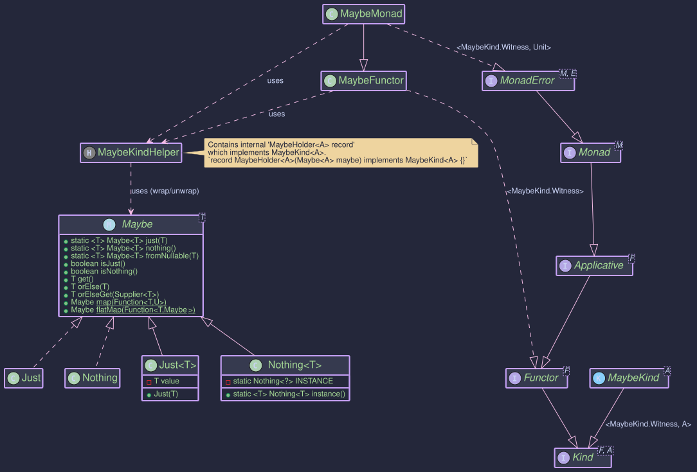

Maybe - Handling Optional Values with Non-Null Guarantee
Purpose
The Maybe<T> type in Higher-Kinded-J represents a value that might be present (Just<T>) or absent (Nothing<T>). It is conceptually similar to java.util.Optional<T> but with a key distinction: a Just<T> is guaranteed to hold a non-null value. This strictness helps prevent NullPointerExceptions when a value is asserted to be present. Maybe.fromNullable(T value) or MaybeMonad.of(T value) should be used if the input value could be null, as these will correctly produce a Nothing in such cases.
The MaybeMonad provides a monadic interface for Maybe, allowing for functional composition and integration with the Higher-Kinded Type (HKT) system. This facilitates chaining operations that may or may not yield a value, propagating the Nothing state automatically.
Key benefits include:
- Explicit Optionality with Non-Null Safety:
Just<T>guarantees its contained value is not null.Nothing<T>clearly indicates absence. - Functional Composition: Enables elegant chaining of operations using
map,flatMap, andap, whereNothingshort-circuits computations. - HKT Integration:
MaybeKind<A>(the HKT wrapper forMaybe<A>) andMaybeMonadallowMaybeto be used with generic functions and type classes that expectKind<F, A>,Functor<F>,Applicative<F>,Monad<M>, orMonadError<M, E>. - Error Handling for Absence:
MaybeMonadimplementsMonadError<MaybeKind.Witness, Unit>.Nothingis treated as the "error" state, withUnitas the phantom error type, signifying absence.
It implements MonadError<MaybeKind.Witness, Unit>, which transitively includes Monad<MaybeKind.Witness>, Applicative<MaybeKind.Witness>, and Functor<MaybeKind.Witness>.
Structure

How to Use MaybeMonad and Maybe
Creating Instances
Maybe<A> instances can be created directly using static factory methods on Maybe, or via MaybeMonad for HKT integration. MaybeKind<A> is the HKT wrapper.
Direct Maybe Creation:
Creates a Just holding a non-null value. Throws NullPointerException if value is null.
Maybe<String> justHello = Maybe.just("Hello"); // Just("Hello")
Maybe<String> illegalJust = Maybe.just(null); // Throws NullPointerException
Returns a singleton Nothing instance.
Maybe<Integer> noInt = Maybe.nothing(); // Nothing
Creates Just(value) if value is non-null, otherwise Nothing.
Maybe<String> fromPresent = Maybe.fromNullable("Present"); // Just("Present")
Maybe<String> fromNull = Maybe.fromNullable(null); // Nothing
MaybeKindHelper (for HKT wrapping):
MaybeKindHelper.wrap(Maybe maybe)
Converts a Maybe<A> to MaybeKind<A>.
MaybeKind<String> kindJust = MaybeKindHelper.wrap(Maybe.just("Wrapped"));
MaybeKind<Integer> kindNothing = MaybeKindHelper.wrap(Maybe.nothing());
MaybeMonad Instance Methods:
Lifts a value into MaybeKind. Uses Maybe.fromNullable() internally.
MaybeMonad maybeMonad = new MaybeMonad();
Kind<MaybeKind.Witness, String> kindFromMonad = maybeMonad.of("Monadic"); // Just("Monadic")
Kind<MaybeKind.Witness, String> kindNullFromMonad = maybeMonad.of(null); // Nothing
Creates a MaybeKind representing Nothing. The error (Unit) argument is ignored.
Kind<MaybeKind.Witness, Double> errorKind = maybeMonad.raiseError(Unit.INSTANCE); // Nothing
To get the underlying Maybe<A> from a MaybeKind<A>, use MaybeKindHelper.unwrap():
MaybeKind<String> kindJust = MaybeKindHelper.just("Example");
Maybe<String> unwrappedMaybe = MaybeKindHelper.unwrap(kindJust); // Just("Example")
System.out.println("Unwrapped: " + unwrappedMaybe);
MaybeKind<Integer> kindNothing = MaybeKindHelper.nothing();
Maybe<Integer> unwrappedNothing = MaybeKindHelper.unwrap(kindNothing); // Nothing
System.out.println("Unwrapped Nothing: " + unwrappedNothing);
Interacting with Maybe values
The Maybe interface itself provides useful methods:
isJust(): Returnstrueif it's aJust.isNothing(): Returnstrueif it's aNothing.get(): Returns the value ifJust, otherwise throwsNoSuchElementException. Use with caution.orElse(@NonNull T other): Returns the value ifJust, otherwise returnsother.orElseGet(@NonNull Supplier<? extends @NonNull T> other): Returns the value ifJust, otherwise invokesother.get().- The
Maybeinterface also has its ownmapandflatMapmethods, which are similar in behavior to those onMaybeMonadbut operate directly onMaybeinstances.
Key Operations (via MaybeMonad)
Applies f to the value inside ma if it's Just. If ma is Nothing, or if f returns null (which Maybe.fromNullable then converts to Nothing), the result is Nothing.
void mapExample() {
MaybeMonad maybeMonad = new MaybeMonad();
Kind<MaybeKind.Witness, Integer> justNum = MaybeKindHelper.just(10);
Kind<MaybeKind.Witness, Integer> nothingNum = MaybeKindHelper.nothing();
Function<Integer, String> numToString = n -> "Val: " + n;
Kind<MaybeKind.Witness, String> justStr = maybeMonad.map(numToString, justNum); // Just("Val: 10")
Kind<MaybeKind.Witness, String> nothingStr = maybeMonad.map(numToString, nothingNum); // Nothing
Function<Integer, String> numToNull = n -> null;
Kind<MaybeKind.Witness, String> mappedToNull = maybeMonad.map(numToNull, justNum); // Nothing
System.out.println("Map (Just): " + MaybeKindHelper.unwrap(justStr));
System.out.println("Map (Nothing): " + MaybeKindHelper.unwrap(nothingStr));
System.out.println("Map (To Null): " + MaybeKindHelper.unwrap(mappedToNull));
}
If ma is Just(a), applies f to a. f must return a Kind<MaybeKind.Witness, B>. If ma is Nothing, or f returns Nothing, the result is Nothing.
void flatMapExample() {
MaybeMonad maybeMonad = new MaybeMonad();
Function<String, Kind<MaybeKind.Witness, Integer>> parseString = s -> {
try {
return MaybeKindHelper.just(Integer.parseInt(s));
} catch (NumberFormatException e) {
return MaybeKindHelper.nothing();
}
};
Kind<MaybeKind.Witness, String> justFiveStr = MaybeKindHelper.just("5");
Kind<MaybeKind.Witness, Integer> parsedJust = maybeMonad.flatMap(parseString, justFiveStr); // Just(5)
Kind<MaybeKind.Witness, String> justNonNumStr = MaybeKindHelper.just("abc");
Kind<MaybeKind.Witness, Integer> parsedNonNum = maybeMonad.flatMap(parseString, justNonNumStr); // Nothing
System.out.println("FlatMap (Just): " + MaybeKindHelper.unwrap(parsedJust));
System.out.println("FlatMap (NonNum): " + MaybeKindHelper.unwrap(parsedNonNum));
}
If ff is Just(f) and fa is Just(a), applies f to a. Otherwise, Nothing.
void apExample() {
MaybeMonad maybeMonad = new MaybeMonad();
Kind<MaybeKind.Witness, Integer> justNum = MaybeKindHelper.just(10);
Kind<MaybeKind.Witness, Integer> nothingNum = MaybeKindHelper.nothing();
Kind<MaybeKind.Witness, Function<Integer, String>> justFunc = MaybeKindHelper.just(i -> "Result: " + i);
Kind<MaybeKind.Witness, Function<Integer, String>> nothingFunc = MaybeKindHelper.nothing();
Kind<MaybeKind.Witness, String> apApplied = maybeMonad.ap(justFunc, justNum); // Just("Result: 10")
Kind<MaybeKind.Witness, String> apNothingFunc = maybeMonad.ap(nothingFunc, justNum); // Nothing
Kind<MaybeKind.Witness, String> apNothingVal = maybeMonad.ap(justFunc, nothingNum); // Nothing
System.out.println("Ap (Applied): " + MaybeKindHelper.unwrap(apApplied));
System.out.println("Ap (Nothing Func): " + MaybeKindHelper.unwrap(apNothingFunc));
System.out.println("Ap (Nothing Val): " + MaybeKindHelper.unwrap(apNothingVal));
}
Example: handleErrorWith(Kind<MaybeKind.Witness, A> ma, Function<Void, Kind<MaybeKind.Witness, A>> handler)
If ma is Just, it's returned. If ma is Nothing (the "error" state), handler is invoked (with Unit.INSTANCE for Unit) to provide a recovery MaybeKind.
void handleErrorWithExample() {
MaybeMonad maybeMonad = new MaybeMonad();
Function<Unit, Kind<MaybeKind.Witness, String>> recover = v -> MaybeKindHelper.just("Recovered");
Kind<MaybeKind.Witness, String> handledJust = maybeMonad.handleErrorWith(MaybeKindHelper.just("Original"), recover); // Just("Original")
Kind<MaybeKind.Witness, String> handledNothing = maybeMonad.handleErrorWith(MaybeKindHelper.nothing(), recover); // Just("Recovered")
System.out.println("HandleError (Just): " + MaybeKindHelper.unwrap(handledJust));
System.out.println("HandleError (Nothing): " + MaybeKindHelper.unwrap(handledNothing));
}
A complete example demonstrating generic usage:
public void monadExample() {
MaybeMonad maybeMonad = new MaybeMonad();
// 1. Create MaybeKind instances
Kind<MaybeKind.Witness, Integer> presentIntKind = MaybeKindHelper.just(100);
Kind<MaybeKind.Witness, Integer> absentIntKind = MaybeKindHelper.nothing();
Kind<MaybeKind.Witness, String> nullInputStringKind = maybeMonad.of(null); // Becomes Nothing
// 2. Use map
Function<Integer, String> intToStatus = n -> "Status: " + n;
Kind<MaybeKind.Witness, String> mappedPresent = maybeMonad.map(intToStatus, presentIntKind);
Kind<MaybeKind.Witness, String> mappedAbsent = maybeMonad.map(intToStatus, absentIntKind);
System.out.println("Mapped (Present): " + MaybeKindHelper.unwrap(mappedPresent)); // Just(Status: 100)
System.out.println("Mapped (Absent): " + MaybeKindHelper.unwrap(mappedAbsent)); // Nothing
// 3. Use flatMap
Function<Integer, Kind<MaybeKind.Witness, String>> intToPositiveStatusKind = n ->
(n > 0) ? maybeMonad.of("Positive: " + n) : MaybeKindHelper.nothing();
Kind<MaybeKind.Witness, String> flatMappedPresent = maybeMonad.flatMap(intToPositiveStatusKind, presentIntKind);
Kind<MaybeKind.Witness, String> flatMappedZero = maybeMonad.flatMap(intToPositiveStatusKind, maybeMonad.of(0)); // 0 is not > 0
System.out.println("FlatMapped (Present Positive): " + MaybeKindHelper.unwrap(flatMappedPresent)); // Just(Positive: 100)
System.out.println("FlatMapped (Zero): " + MaybeKindHelper.unwrap(flatMappedZero)); // Nothing
// 4. Use 'of' and 'raiseError'
Kind<MaybeKind.Witness, String> fromOf = maybeMonad.of("Direct Value");
Kind<MaybeKind.Witness, String> fromRaiseError = maybeMonad.raiseError(Unit.INSTANCE); // Creates Nothing
System.out.println("From 'of': " + MaybeKindHelper.unwrap(fromOf)); // Just(Direct Value)
System.out.println("From 'raiseError': " + MaybeKindHelper.unwrap(fromRaiseError)); // Nothing
System.out.println("From 'of(null)': " + MaybeKindHelper.unwrap(nullInputStringKind)); // Nothing
// 5. Use handleErrorWith
Function<Void, Kind<MaybeKind.Witness, Integer>> recoverWithDefault =
v -> maybeMonad.of(-1); // Default value if absent
Kind<MaybeKind.Witness, Integer> recoveredFromAbsent =
maybeMonad.handleErrorWith(absentIntKind, recoverWithDefault);
Kind<MaybeKind.Witness, Integer> notRecoveredFromPresent =
maybeMonad.handleErrorWith(presentIntKind, recoverWithDefault);
System.out.println("Recovered (from Absent): " + MaybeKindHelper.unwrap(recoveredFromAbsent)); // Just(-1)
System.out.println("Recovered (from Present): " + MaybeKindHelper.unwrap(notRecoveredFromPresent)); // Just(100)
// Using the generic processData function
Kind<MaybeKind.Witness, String> processedPresent = processData(presentIntKind, x -> "Processed: " + x, "N/A", maybeMonad);
Kind<MaybeKind.Witness, String> processedAbsent = processData(absentIntKind, x -> "Processed: " + x, "N/A", maybeMonad);
System.out.println("Generic Process (Present): " + MaybeKindHelper.unwrap(processedPresent)); // Just(Processed: 100)
System.out.println("Generic Process (Absent): " + MaybeKindHelper.unwrap(processedAbsent)); // Just(N/A)
// Unwrap to get back the standard Maybe
Maybe<String> finalMappedMaybe = MaybeKindHelper.unwrap(mappedPresent);
System.out.println("Final unwrapped mapped maybe: " + finalMappedMaybe); // Just(Status: 100)
}
public static <A, B> Kind<MaybeKind.Witness, B> processData(
Kind<MaybeKind.Witness, A> inputKind,
Function<A, B> mapper,
B defaultValueOnAbsence,
MaybeMonad monad
) {
// inputKind is now Kind<MaybeKind.Witness, A>, which is compatible with monad.map
Kind<MaybeKind.Witness, B> mappedKind = monad.map(mapper, inputKind);
// The result of monad.map is Kind<MaybeKind.Witness, B>.
// The handler (Unit v) -> monad.of(defaultValueOnAbsence) also produces Kind<MaybeKind.Witness, B>.
return monad.handleErrorWith(mappedKind, (Unit v) -> monad.of(defaultValueOnAbsence));
}
This example highlights how MaybeMonad facilitates working with optional values in a functional, type-safe manner, especially when dealing with the HKT abstractions and requiring non-null guarantees for present values.